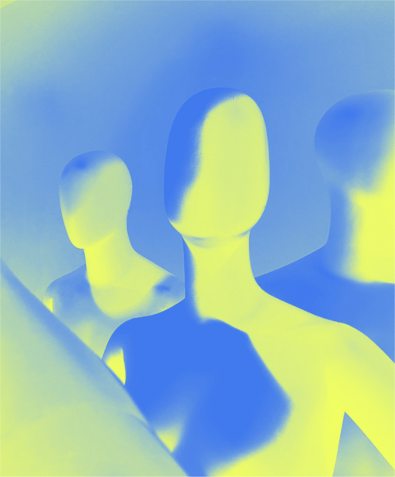
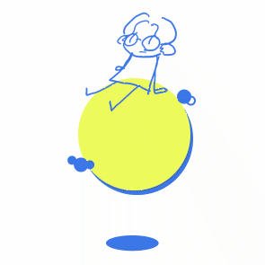

사람의 경험을 탐하다.
experience from
attention
단순한 미적 추구만이 아닌 삶의 가장 가까이에
문화와 취미, 가구나 단순한 필기류 하나까지도
사용자의 경험이 되기를 바랍니다.

Endroll
좋은 디자인이나 훌륭한 대중 예술같은 건 사실 아직 잘 모르겠습니다.
그저 눈에 보이는 것들이 사소하더라도 빛을 내며 누군가에게는
실용적인 의미가 될 수 있길 바라며 디자인을 시작했고
그 바람 하나로 첫번째 포트폴리오를 완성하게 되었습니다.
누군가는 사소하게 넘어갈 수 있는 작은 부분까지도 신경쓰며
발전할 수 있도록 노력하고 있습니다.
열람해 주셔서 감사합니다.
@cyberjoyangonline
hichelwondry@gmail.com